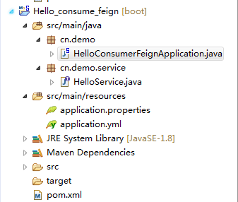

一、Feign介绍
Feign是一个声明式的伪Http客户端，它使得写Http客户端变得更简单。使用Feign，只需要创建一个接口并注解。它具有可插拔的注解特性，可使用Feign 注解和JAX-RS注解。Feign支持可插拔的编码器和解码器。Feign默认集成了Ribbon，并和Eureka结合，默认实现了负载均衡的效果。

pom.xml：
<dependency>
<groupId>org.springframework.boot</groupId>
<artifactId>spring-boot-starter-web</artifactId>
</dependency>
<dependency>
<groupId>org.springframework.cloud</groupId>
<artifactId>spring-cloud-starter-eureka</artifactId>
</dependency>
<dependency>
<groupId>org.springframework.cloud</groupId>
<artifactId>spring-cloud-starter-feign</artifactId>
</dependency>
application.properties：
spring.application.name=hello-consumer-feign
server.port=8031
eureka.client.serviceUrl.defaultZone=http://localhost:8001/eureka/Feign客户端：package cn.demo.service;
import org.springframework.cloud.netflix.feign.FeignClient;
import org.springframework.web.bind.annotation.RequestMapping;
import org.springframework.web.bind.annotation.RequestParam;
//注意点：这里user-service大小写都可以，默认会转成大写
@FeignClient("user-service")
public interface HelloService {
//这里必须是这样配置，如果不配置或者配置的value=name1或者是其他值，相当于传其他参数key过去，在这里传错的话，会返回hello, null，因为hello-service接口拿不到name的值。
@RequestMapping("hello")
String hello (@RequestParam(value = "name") String name) ;
}启动类:
package cn.demo;
import org.springframework.beans.factory.annotation.Autowired;
import org.springframework.boot.SpringApplication;
import org.springframework.boot.autoconfigure.SpringBootApplication;
import org.springframework.cloud.client.discovery.EnableDiscoveryClient;
import org.springframework.cloud.netflix.feign.EnableFeignClients;
import org.springframework.web.bind.annotation.RequestMapping;
import org.springframework.web.bind.annotation.RestController;
import cn.demo.service.HelloService;
@SpringBootApplication
@EnableDiscoveryClient
@EnableFeignClients
@RestController
public class HelloConsumerFeignApplication {
public static void main(String[] args) {
SpringApplication.run(HelloConsumerFeignApplication.class, args);
}
@Autowired
private HelloService helloService;
@RequestMapping("hello")
public String hello(String name){
return helloService.hello(name);
}
}同样的，先启动eureka-server:8001， 以及hello-service:8011,8012，然后访问：
http://localhost:8031/hello?name=feign
结果：
同样的多次访问，hello-service:8011,8012日志都有打印调用信息，表示也实现了负载均衡。